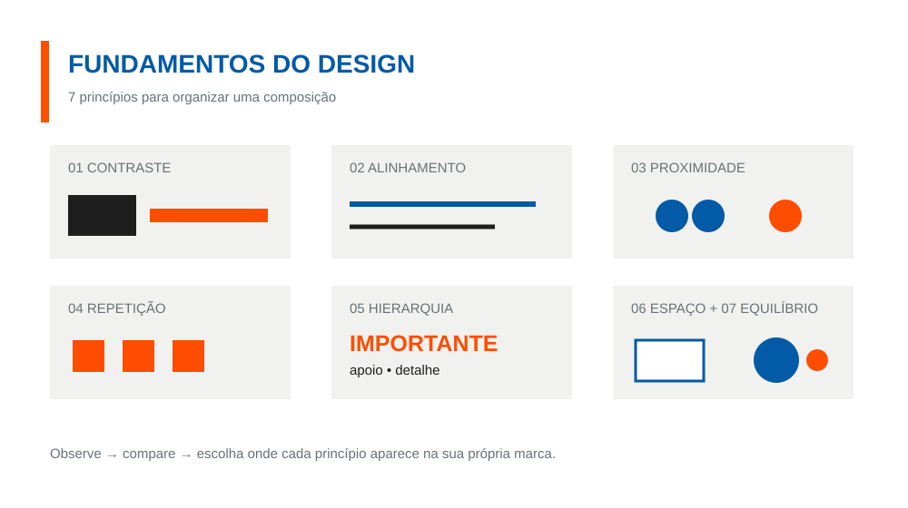
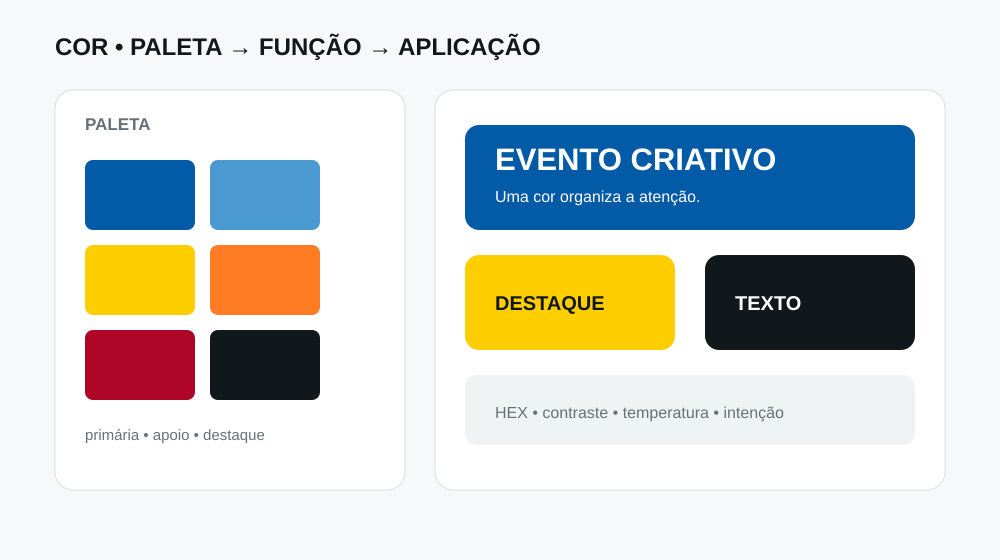
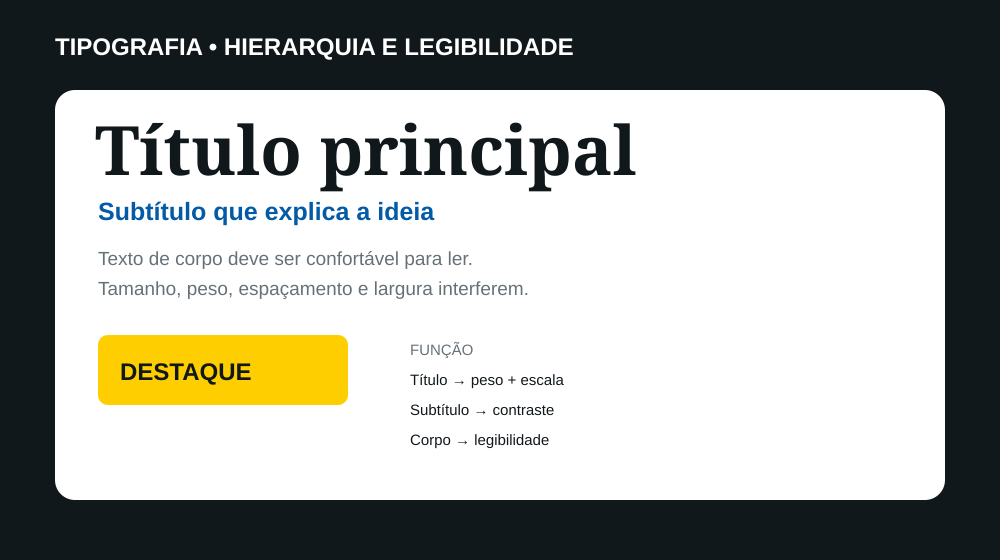
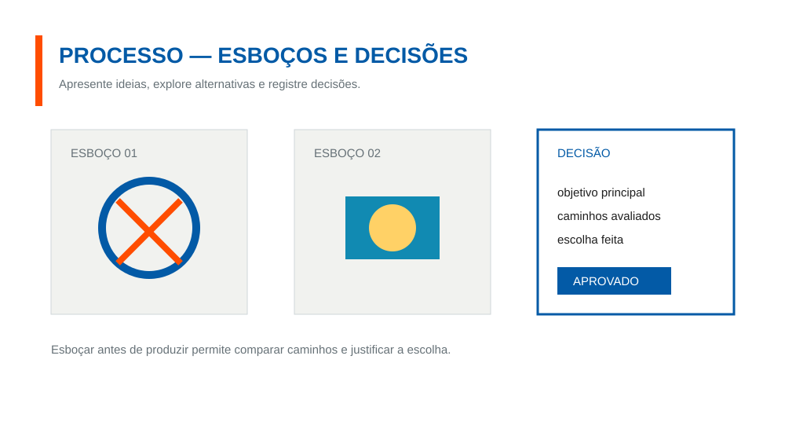
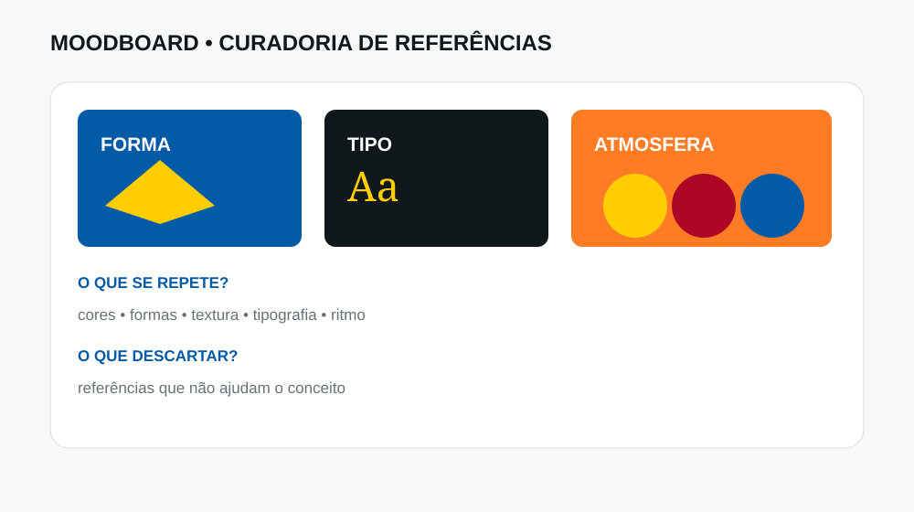
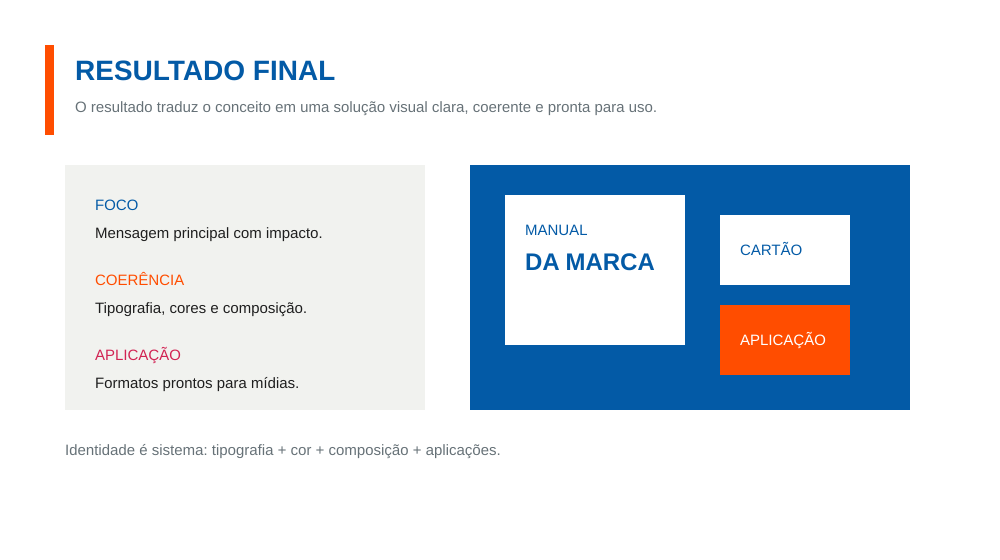
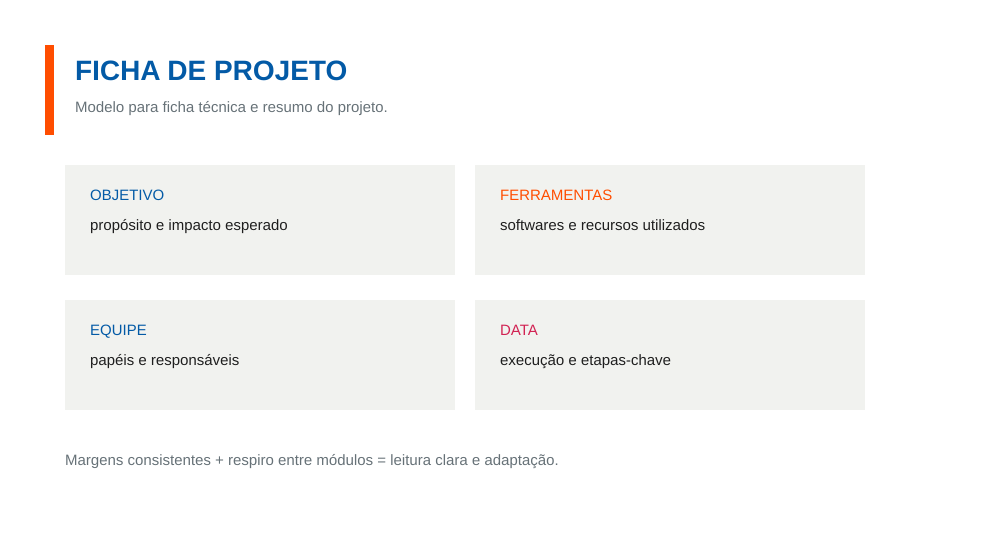
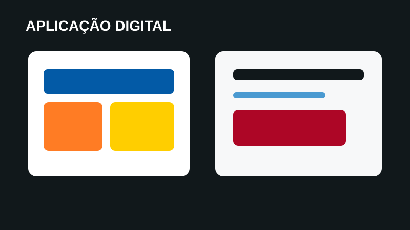
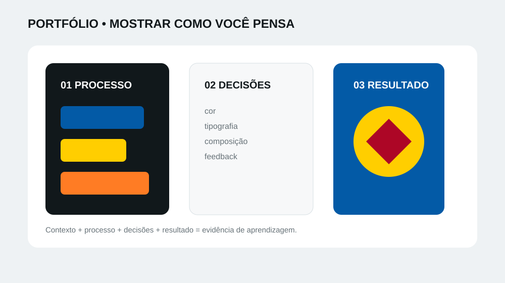

01 • FundamentosComposição visual
Contraste, hierarquia, alinhamento, proximidade, repetição, ritmo e espaço em branco.
PrincípiosUm espaço para organizar os materiais didáticos, referências visuais e estruturas de estudo que sustentam o percurso de Design Gráfico. Aqui, a referência não é resposta pronta: é ponto de partida para observar, comparar, experimentar e criar.
Os materiais acompanham a progressão do curso: primeiro o observar aprende a perceber relações visuais; depois a reflexão organiza possibilidades; por fim, o estudante aplica escolhas em projetos digitais.
O foco está menos em decorar regras e mais em compreender por que uma escolha funciona, testar alternativas e justificar decisões.
Essa sequência transforma referência em aprendizagem e aproxima teoria, prática e autonomia.
Pergunta central:
“O que estou vendo, o que estou tentando fazer e por que escolhi este caminho?”
Cada bloco representa um tipo de material ou referência que pode apoiar aulas, exercícios, projetos e revisões. A página é uma estrutura pública de aprendizagem; registros individuais de estudantes permanecem fora desta área.

01 • FundamentosContraste, hierarquia, alinhamento, proximidade, repetição, ritmo e espaço em branco.
Princípios
02 • CorCombinações, contraste, temperatura, intensidade e função da cor dentro de uma composição.
Linguagem
03 • TipografiaFamílias, pesos, escala, contraste, legibilidade e organização da informação.
Informação
04 • EsboçosEstratégias para tirar ideias da cabeça, visualizar possibilidades e comparar soluções antes da produção.
Ideação
05 • MoodboardCuradoria de imagens, cores, formas e atmosferas para construir uma direção visual coerente.
Pesquisa
06 • IdentidadeConceito, elementos gráficos, linguagem e coerência entre diferentes aplicações.
Sistema
07 • PlanejamentoObjetivo, público, conteúdo, requisitos, referências, etapas e critérios para orientar a produção.
Projeto
08 • ProduçãoAplicação dos fundamentos em páginas Web, apps e jogos, conectando visual, interação e experiência.
Produção digital
09 • PortfólioOrganização dos produtos digitais, contextualização, critérios de seleção e preparação para apresentação pública.
PortfólioQuais elementos, relações e decisões chamam minha atenção?
Que mudança de cor, escala, posição, forma ou tipografia altera o resultado?
Qual solução comunica melhor a intenção e para quem estou projetando?
Esta página organiza materiais e referências didáticas de caráter geral. Ela não funciona como arquivo público do processo individual dos estudantes. Esboços, exercícios, avaliações, registros de acompanhamento e demais evidências pedagógicas individuais permanecem em ambientes internos ou restritos à equipe responsável. Produtos digitais selecionados podem ser publicados na Mostra e no Portfólio conforme a política de publicação do projeto.